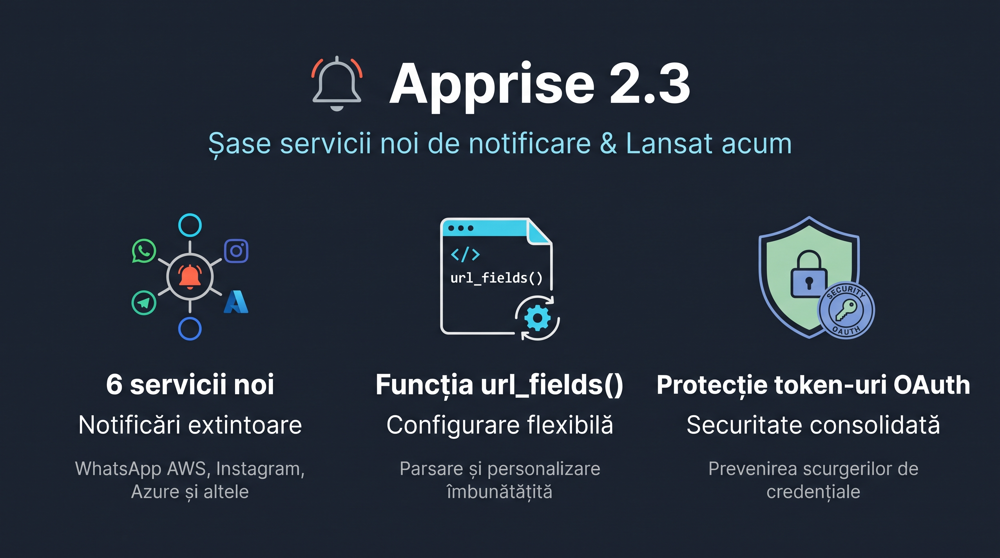

Apprise 2.3 a fost lansat: Șase servicii noi de notificare (WhatsApp AWS, Instagram, Azure), funcția url_fields() și protecție pentru token-urile OAuth

Apprise, biblioteca și utilitarul open-source bazat pe Python care permite aplicațiilor și scripturilor să trimită notificări către zeci de platforme printr-o interfață unificată, a primit versiunea 2.3. Actualizarea introduce o nouă funcție destinată dezvoltatorilor pentru construirea interfețelor de configurare, adaugă suport pentru șase servicii noi de mesagerie/push, îmbunătățește criptarea PushWard și întărește securitatea jurnalelor de depanare.
1. Funcția url_fields() și configurare simplificată pentru dezvoltatori
Conversie bidirecțională URL ↔ câmpuri de formular (
url_fields()): Cea mai importantă adăugire tehnică permite transformarea URL-urilor specifice serviciilor de notificare în câmpuri de formular lizibile și reconstruirea lor ulterioară, eliminând nevoia ca utilizatorii finali să compună manual șiruri URL complexe.Pregătire pentru Apprise-API și Apprise Mobile 0.8: Această funcționalitate stă la baza viitoarelor actualizări pentru Apprise-API și Apprise Mobile 0.8 (Android și iOS), permițând componentei URL Builder din aplicația mobilă să încarce URL-urile existente direct în câmpuri editabile.
2. Șase servicii noi de notificare și actualizări ale plugin-urilor existente
Integrări noi în Apprise 2.3.0:
WhatsApp (prin AWS End User Messaging Social);
Mesaje directe Instagram (Instagram Direct Messages);
Email Azure Communication Services;
Pushplus;
OpsiMate;
Notificări push Notify!.
Îmbunătățiri pentru servicii existente: PushWard primește suport pentru criptare end-to-end, alături de opțiuni pentru confirmări (acknowledgments), amânare (snoozing), fire de discuție (threads), subtitluri și restrângerea notificărilor. De asemenea, Feishu și Lark pot afișa acum conținutul Markdown sub formă de carduri interactive.
3. Securitate, formatare și fiabilitatea livrării
Protecția token-urilor OAuth în log-uri: Include o remediere de securitate și modificări care împiedică apariția token-urilor de acces OAuth în jurnalele de depanare (debug logs).
Livrare și formatare fără blocaje: Descărcările lente ale atașamentelor nu mai blochează trimiterea notificărilor, iar integrarea Telegram primește corecții pentru gestionarea spoilerelor în
MarkdownV2și plasarea legendelor (captions) la albume.Șabloane UTF-8 și parsare strictă: Șabloanele pentru Discord, Slack, Telegram și Workflows sunt citite explicit ca UTF-8, sunt corectate erorile legate de substituenții case-sensitive și parametrii scriși cu majuscule, iar conversia Markdown-to-HTML pentru blocurile de cod delimitate (fenced code blocks), parsarea nativă a URL-urilor și reîncercările pentru integrarea Trigv au fost îmbunătățite.